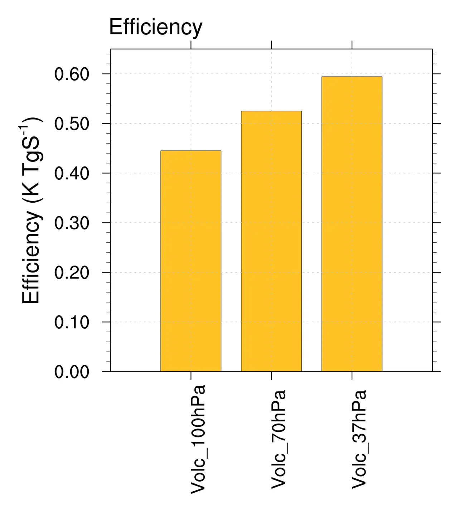

Climate system response to stratospheric sulfate aerosols: sensitivity to altitude of aerosol layer
Key finding. With a fixed quantity of sulfate aerosol prescribed uniformly at different stratospheric levels, so that sedimentation cannot explain the difference, aerosols still cool the climate more when they reside higher — because the effective radiative forcing itself is larger at altitude, through fast adjustments in stratospheric water vapour, tropospheric stability and clouds.

What question did this research address?
It is well established that aerosol injected higher in the stratosphere cools more, and the usual explanation is residence time: particles higher up take longer to settle out, so a given injection lasts longer.
That explanation makes altitude a question of aerosol lifetime. This paper asked whether there is an additional, purely radiative dependence on altitude, by holding the aerosol amount fixed and simply placing it at different levels.
What did we find?
The experiment prescribes a specified amount of sulfate aerosol, of a size typical of volcanic particles, distributed uniformly at different levels — which removes lifetime and transport from the comparison by construction.
Higher aerosol still cools more, so residence time is not the whole story.
The mechanism runs through the stratosphere's own temperature. Volcanic aerosols heat the layer they occupy, and that heating alters stratospheric water vapour content, tropospheric stability, and cloud.
Those fast adjustments change the effective radiative forcing, whose magnitude is larger when the aerosol sits higher — and the authors show this accounts for a substantial part of the altitude dependence of cooling.
These effects are additional to the dependences on aerosol microphysics, transport and sedimentation, which the study deliberately leaves outside its scope.
Why does it matter?
It isolates a second reason altitude matters. Any assessment that models injection height purely through particle lifetime is missing a radiative term that acts in the same direction, and so will misestimate how much cooling a given injection buys.
The mechanism is a fast adjustment rather than a surface-temperature feedback, which means it is present within weeks of injection and is not something the climate settles out of.
For scheme design it makes injection altitude a lever on efficacy in its own right, not merely a way of keeping the aerosol up there longer.
Citation, data, and code
Krishna-Pillai Sukumara-Pillai Krishnamohan, Govindasamy Bala, Long Cao, Lei Duan, and Ken Caldeira (2019). Climate system response to stratospheric sulfate aerosols: sensitivity to altitude of aerosol layer. Earth System Dynamics 10, 885-900.
Related
- Could reflecting sunlight substitute for reducing carbon dioxide?
- Geoengineering as an optimization problem (Ban-Weiss and Caldeira, 2010)
- Quantification of tropical monsoon precipitation changes in terms of interhemispheric differences in stratospheric sulfate aerosol optical depth (Roose et al., 2023)
- Climate response to changes in atmospheric carbon dioxide and solar irradiance on the time scale of days to weeks (Cao et al., 2012)